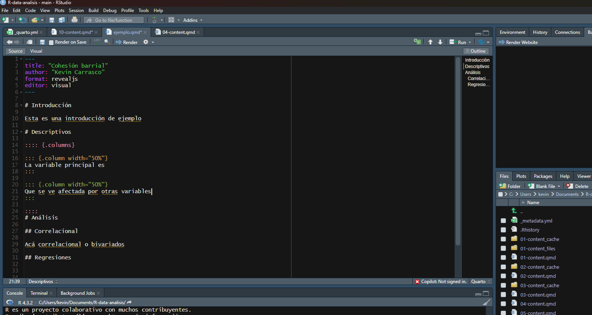
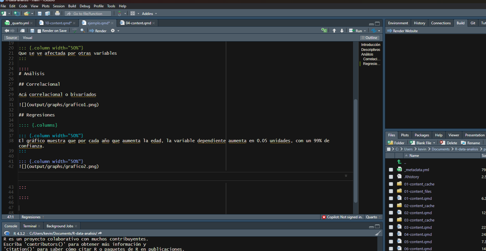

Código
graph1 <- data %>% ggplot2::ggplot(aes(x=conf_inst))+
geom_bar()
ggsave(graph1, file="output/graphs/graph1.png")R data analisis
El objetivo de esta práctica es revisar el proceso de elaboración de una presentación mediante documentos dinámicos, específicamente mediante Quarto. La guía oficial para elaborar este documento la puedes revisar acá
Para presentar resultados de una investigación, lo más fácil es anteriormente haber exportado nuestros gráficos como imagen y almacenarlos en la carpeta output.
Si recordamos de los prácticos anteriores, suponiendo que estamos trabajando en nuestro archivo de análisis, dentro de la carpeta de procesamiento, el código estándar para exportar gráficos es el siguiente:
graph1 <- data %>% ggplot2::ggplot(aes(x=conf_inst))+
geom_bar()
ggsave(graph1, file="output/graphs/graph1.png")De esta forma guardamos nuestro gráfico en la carpeta output, dentro de una segunda subcarpeta ‘graphs’.
Las presentaciones elaboradas con Quarto se pueden exportar en tres ‘output’ o formatos diferentes:
revealjs = reveal.js (HTML)
pptx = PowerPoint (MS Office)
beamer = Beamer (LaTeX/PDF)
Para este caso nos enfocaremos en revealjs que nos permite posteriormente visualizar la presentación en Github Pages.
1- file -> new file -> Quarto presentations

2- Agregamos un título a la presentación y nuestro nombre como autores. Nos aseguramos que esté en formato revealjs y creamos el documento
3- Para facilitar la elaboración de una presentación cambiaremos el modo de visualización desde ‘visual’ a ‘source’ (para ver el código fuente)

Al igual que al trabajar en un documento de Quarto, cada sección se puede separar con # o ##. En este caso, cada separación o título representará una slide (lámina) diferente. Un # sirve para generar un título grande que aparece centrado y ## crean un título más pequeño que aparece al comienzo de la slide.
4- Probemos creando dos slides para una presentación académica. Primero, una slide que tenga por título ‘Introducción’ y una segunda slide que tenga por título ‘Descriptivos’.

5- Ya podemos renderizar el documento para ver cómo está quedando. Posiblemente nos pedirá guardar y lo almacenamos en la misma carpeta que tiene nuestro proyecto .Rproject y nuestra carpeta output con las imágenes que hemos exportado. Se debería ver más o menos así:
Le podemos asignar distintas características a cada slide como, por ejemplo, separar una slide en dos columnas o dos espacios de tamaño personalizable.
:::: {.columns}
::: {.column width="40%"}
Columna izquierda
:::
::: {.column width="60%"}
Columna derecha
:::
::::Suponiendo que una slide tiene un 100% de tamaño, cada porcentaje luego de width representa la proporción que utilizará cada columna en la slide. Lo más fácil es tener dos columnas iguales de 50%, pero dependerá de nuestra presentación.
6- Creemos dos columnas en la slide de ‘Descriptivos’

Otra cosa que podemos hacer es agregar imágenes a cada slides, lo que nos servirá para incluir nuestros gráficos y resultados en general. El código base para agregar una imagen, suponiendo que nuestro archivo de presentación está en la carpeta raiz (siguiendo la estructura recomendada del protocolo IPO), es el siguiente:
7- Agreguemos algún gráfico en la sección de correlaciones

Si combinamos ambas cosas, podemos por ejemplo mostrar en una columna un gráfico y en otra columna su interpretación
8- Agreguemos un gráfico en la columna derecha de la slide de regresiones y su interpretación en la columna izquierda:
:::: {.columns}
::: {.column width="50%"}
El gráfico muestra que por cada año que aumenta la edad, la variable dependiente aumenta en 0.05 unidades, con un 99% de confianza.
:::
::: {.column width="50%"}

:::
::::
Si queremos presentar una slide que tenga un incremento en los puntos que vamos mostrando en la presentación, la función es agregar ‘incremental’ al comienzo de los puntos que queremos que vayan incrementando.
::: {.incremental}
- En esta investigación quisimos demostrar...
- Nuestros principales resultados indican que...
:::9- Agreguemos un incremento de puntos en la sección de conclusión:

Podemos cambiar el estilo completo de la presentación cambiando el Tema (‘theme’) dentro del YAML del inicio. Por ejemplo:
---
title: "Cohesión barrial"
author: "Kevin Carrasco"
format:
revealjs:
theme: dark
editor: visual
---Otras opciones de temas son:
beige
blood
dark
default
league
moon
night
serif
simple
sky
solarized
10- Probemos alguno en nuestro ejemplo y volvemos a renderizar:

Y podemos probar algunas otras cosas para personalizar aún más nuestras presentaciones:
---
title: "Cohesión barrial en Chile"
author: "Kevin Carrasco"
format:
revealjs:
slideNumber: true # Número de slide abajo a la derecha
editor: visual
title-slide-attributes:
data-background-image: input/cohesion.jpg # Agregar una imagen al comienzo de la presentación
data-background-size: contain
data-background-opacity: "0.1" # Qué tan difuminada se ve la imagen (0.1 es lo menor)
bibliography: cohesion.bib # Agregar nuestra bibligrofía
link-citations: TRUE # Que la bibliografía tenga links automáticos
---Si guardamos el archivo de presentación en la carpeta raíz (junto al archivo .Rproject) y subimos todos los documentos a github, entonces el link estandar para visualizar la presentación debería ser: